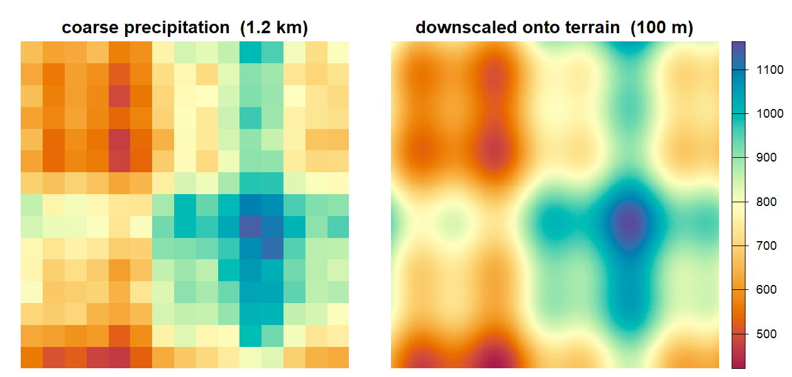

coarse climate grids at the resolution of the terrain

topocast downscales a coarse raster, such as a 1 km precipitation grid, to the resolution of a fine predictor, such as a 100 m elevation model.
In a square window around every coarse cell, topocast fits a linear regression of the coarse variable on the coarse predictors. The fitted intercept and slopes are resampled to the fine grid and applied to the fine predictors, so the output carries the structure of the terrain with coefficients that vary across the map. This is the regression step behind high-resolution climate surfaces such as CHELSA (Karger et al. 2017), fitted locally and with any number of named predictors. The window fits use summed-area tables in C++, so a radius of 30 coarse cells costs the same per cell as a radius of 3. You can map the local coefficients and the fit quality, and decide where the downscaled detail is supported by the terrain.
topocast supports:
-
Several predictors.
prec ~ elev + slope + twifits elevation, slope, topographic wetness or any aligned covariate jointly. Layers are matched by name between the coarse and the fine data, so a missing layer is reported by name. -
Several responses in one call.
cbind(prec, tmin) ~ elevdownscales variables that share the terrain. The window design is built and factored once and solved against each response. -
Time series. A stack of coarse periods passed as
anomalyis carried onto the downscaled baseline, as a ratio for precipitation or as a difference for temperature. -
Prediction at points. Station or plot locations as an
sforSpatVectorobject receive a prediction column instead of a grid. -
Fit quality on the map.
diagnostics = TRUEreturns grids of the local R², the residual standard deviation and the number of valid cells in each window. -
Common spatial classes. terra
SpatRaster, rasterRaster*andstarsgrids are accepted, and the result comes back in the class of the fine data.
Installation
Install the released version from CRAN. Windows and macOS get a binary and need no build tools:
install.packages("topocast")The development version compiles C++ code. Install the build tools for your operating system first:
| Operating system | Build tools |
|---|---|
| Windows | Rtools matching your R version |
| macOS | Run xcode-select --install in Terminal |
| Debian / Ubuntu | Install r-base-dev
|
Check that R can find the compiler:
pkgbuild::has_build_tools(debug = TRUE)Then install topocast from GitHub:
# install.packages("pak")
pak::pak("gcol33/topocast")The compiler has to support C++17. The C++ code links R’s own LAPACK and BLAS through RcppArmadillo and needs no further system library. On Linux, terra, which topocast uses for rasters, builds against GDAL, GEOS and PROJ.
Optional: multithreading
OpenMP lets the window fits use several CPU threads, set by the threads argument of topocast() and window_regression(). By default every available core is used.
Rtools on Windows and the default compiler on Linux include OpenMP. Without it, the package installs and fits on one thread with the same results.
macOS setup
Apple’s compiler needs an additional OpenMP runtime. Install it in Terminal:
Before installing topocast from source, add the settings for your Mac to ~/.R/Makevars, R’s personal compiler-settings file. Create the directory and file if needed.
Apple Silicon:
CPPFLAGS += -I/opt/homebrew/opt/libomp/include -Xclang -fopenmp
LDFLAGS += -L/opt/homebrew/opt/libomp/lib -lompIntel:
Usage
- Give the coarse variable and the fine predictor layer names that the formula uses.
- Call
topocast()with the formula, the coarse grid asdata, the fine grid asontoand the windowradiusin coarse cells. - Use the result, which lies on the grid of
onto, or map the local fit withcoefficients = TRUEordiagnostics = TRUE.
The example builds a 100 m elevation model and a 600 m precipitation grid that falls with elevation:
library(topocast)
library(terra)
set.seed(1)
elev <- rast(nrows = 120, ncols = 120, xmin = 0, xmax = 12000,
ymin = 0, ymax = 12000, crs = "EPSG:32632")
xy <- crds(elev)
elev <- setValues(elev, 1200 + 600 * sin(xy[, 1] / 2500) +
400 * cos(xy[, 2] / 2000))
names(elev) <- "elev"
prec <- 900 - 0.18 * aggregate(elev, fact = 6)
prec <- prec + setValues(prec, rnorm(ncell(prec), 0, 20))
names(prec) <- "prec"
fine_prec <- topocast(prec ~ elev, data = prec, onto = elev, radius = 4)
fine_prec
#> class : SpatRaster
#> size : 120, 120, 1 (nrow, ncol, nlyr)
#> resolution : 100, 100 (x, y)
#> extent : 0, 12000, 0, 12000 (xmin, xmax, ymin, ymax)
#> coord. ref. : WGS 84 / UTM zone 32N (EPSG:32632)
#> source(s) : memory
#> name : prec
#> min value : 495.784953
#> max value : 870.116936The coarse grid has 20 by 20 cells and the result has the 120 by 120 cells of the elevation model. A radius of 4 gives each regression a window of 9 by 9 coarse cells. Here data contains only the precipitation, so the coarse elevation is aggregated from onto before the fit.
The coarse data is a SpatRaster, Raster* or stars grid, and the layer named on the left of the formula is the response. The fine onto is a grid, or a set of points, that carries the predictors named on the right. Both share a coordinate reference system; a mismatch stops the call and names both systems.
Several predictors, responses and periods
Each predictor named in the formula is fitted jointly, and cbind() on the left downscales several responses with one shared design. A stack of coarse periods passed as anomaly fits the baseline once and carries each period onto it, with type = "ratio" for non-negative variables such as precipitation and type = "additive" for temperature. Getting started with topocast runs each of these on one landscape, along with points and the other spatial classes.
Mapping the local fit
coefficients = TRUE returns the fitted layer with the intercept and one slope per predictor on the fine grid. The slope of elevation is the local lapse rate:
grids <- topocast(prec ~ elev, data = prec, onto = elev, radius = 4,
coefficients = TRUE)
names(grids)
#> [1] "prec" "(Intercept)" "elev"diagnostics = TRUE adds the local R² (r.squared), the residual standard deviation and the count of valid cells in each window. clamp = TRUE bounds the output to the observed range of the coarse response where the fine terrain reaches values the window never saw. Averaging the result back to the coarse grid does not reproduce the coarse input exactly, because the coarse residual is not carried.
How the window regression works
Each window fit needs only sums of the response, the predictors and their products over the window. Summed-area tables give each sum in four lookups, so the cost per cell does not depend on the radius. How moving-window downscaling works derives the method and the masking rules. window_regression() runs the same fit on plain numeric matrices, without terra.
Documentation
Start with Getting started with topocast: one landscape downscaled with one and several predictors, several responses, a time series and points.
- How moving-window downscaling works: the local regression, summed-area tables, masking and fit quality.
- Full reference: every function.
Getting help
Questions and bug reports go to the GitHub issues. A bug report is easiest to act on with a small reproducible example, for instance made with reprex.
Support
“Software is like sex: it’s better when it’s free.” — Linus Torvalds
I’m a PhD student who builds R packages in my free time because I believe good tools should be free and open. I started these projects for my own work and figured others might find them useful too.
If this package saved you some time, buying me a coffee is a nice way to say thanks. It helps with my coffee addiction.
Citation
To cite topocast in publications use:
Colling G (2026). _topocast: Moving-Window Regression Downscaling of
Raster Data_. doi:10.32614/CRAN.package.topocast
<https://doi.org/10.32614/CRAN.package.topocast>. R package version
0.0.5, <https://gillescolling.com/topocast/>.BibTeX: